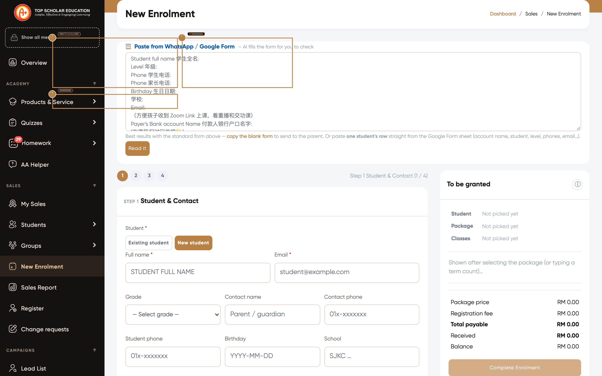
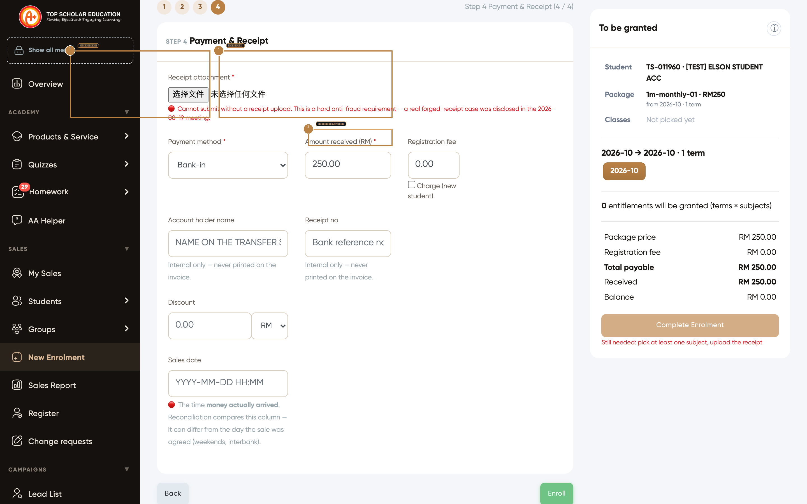
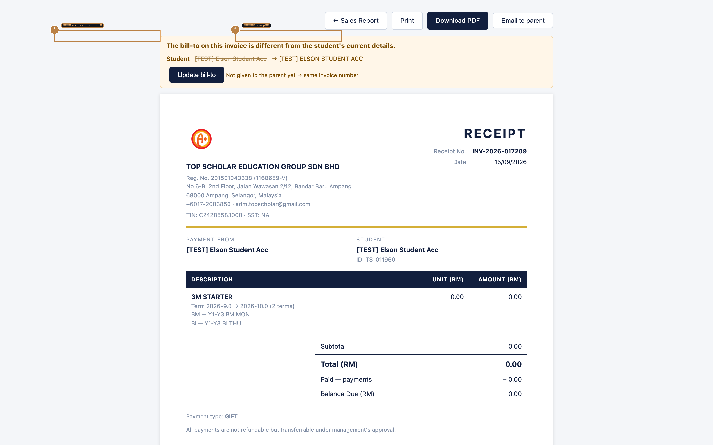
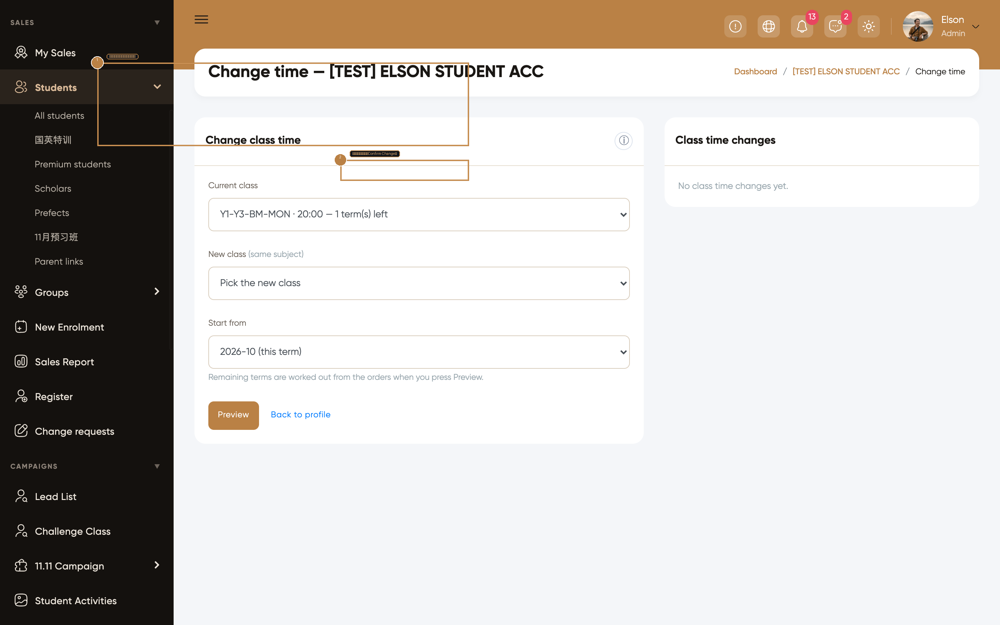
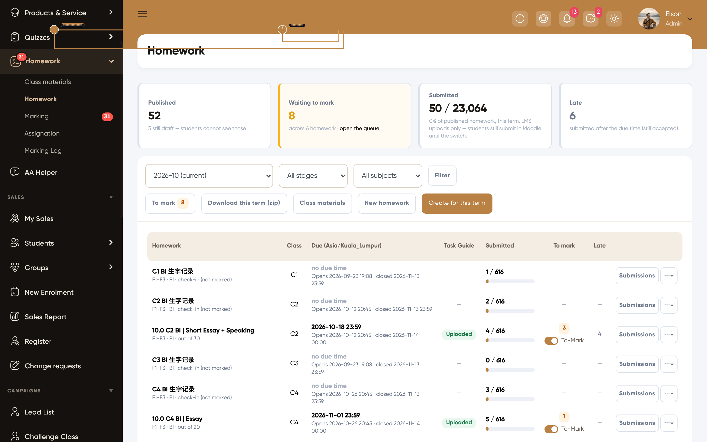
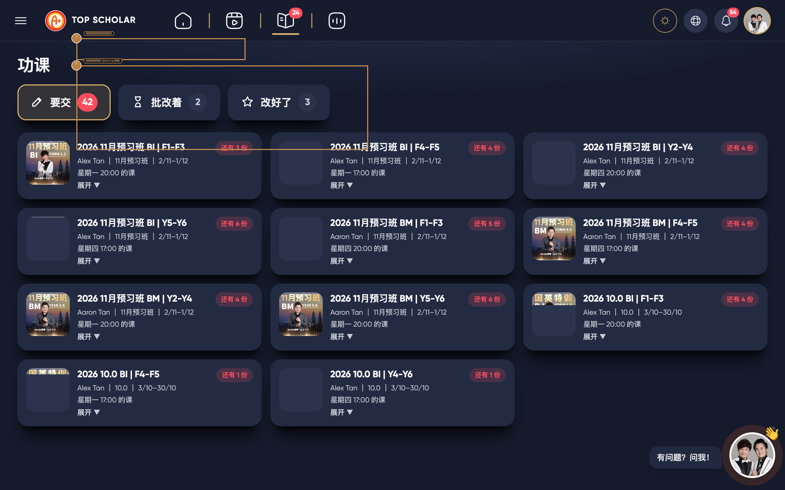
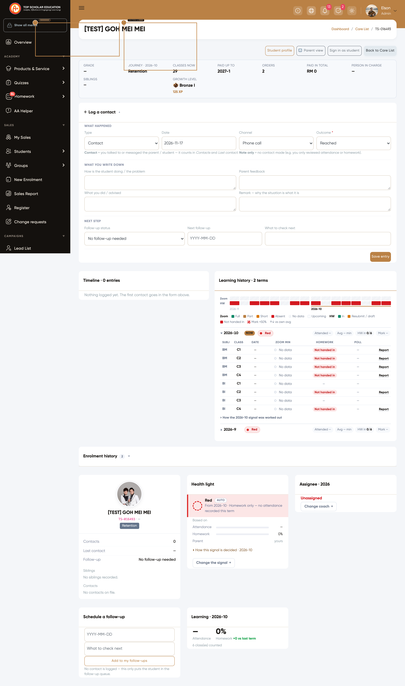
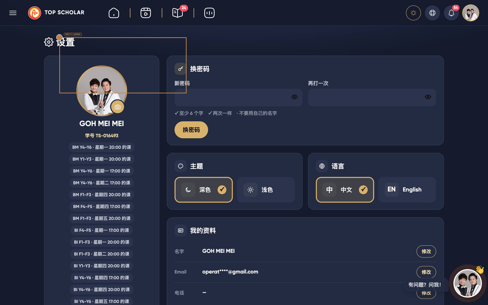
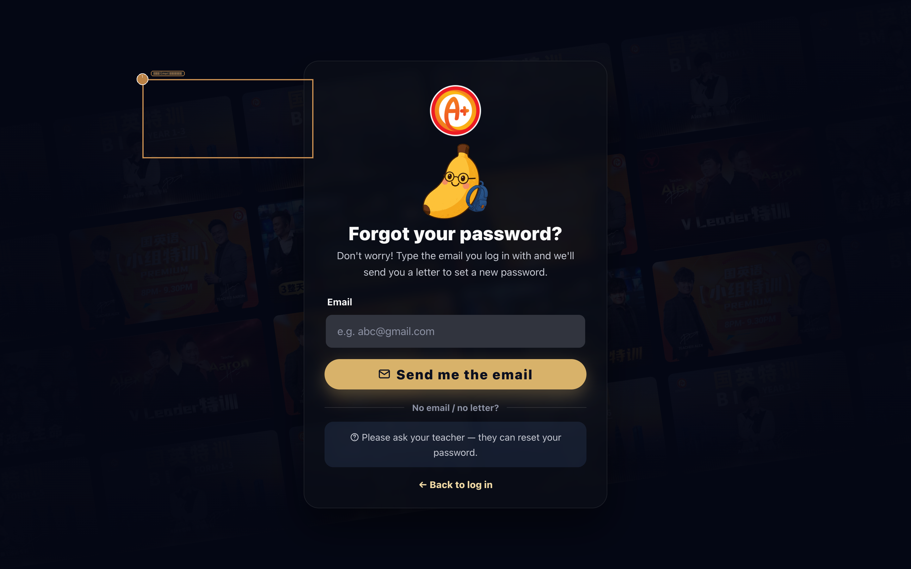
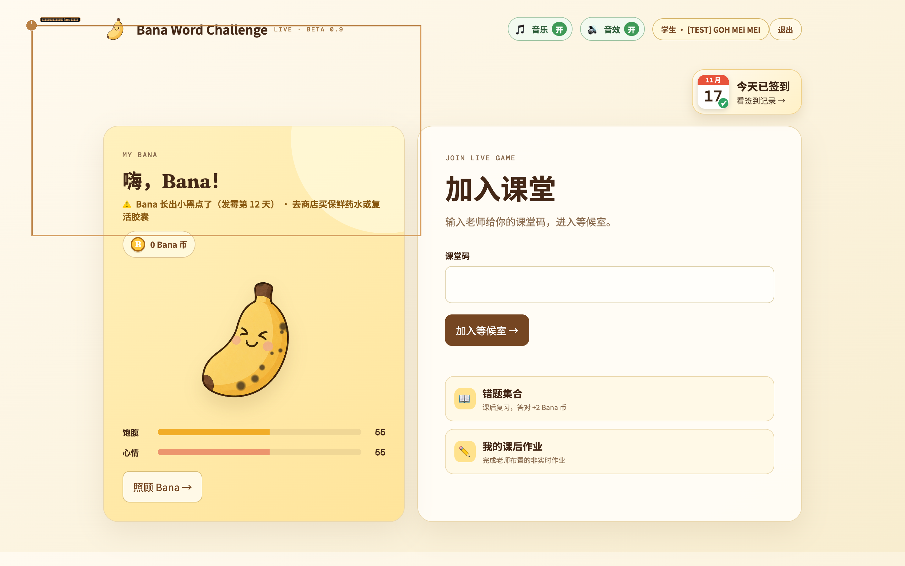

1. Enrolment 销售录单全流程
功能定位：处理学生报名、学期配套签约、加购科目、登记收款凭证并自动开立官方 PDF 发票。
进入后台 Enrolments 列表，开启录单

贴上家长资料让 AI 自动拆解（Paste & Parse）

选定学期配套（Terms）与加选科目（Add-on）

登记收款凭证与送出前确认

单据详情、付款记录与发票开立

2. 学生页面怎样换（换班 / 换时间 / 转课）
功能定位：在学生档案页面，管理学生的学籍称号、班级组别，以及处理永久调整时段（Change Time）、单堂临时补课（Swap Class）与跨期转班（Transfer）。
学生档案页与 Title & Group 称号组别卡
/admin/ts-crm/students/{id}），上方展示学生学号、年级与「Title & Group」称号卡（如组号、状元徽、称号）。注意：老师在 Zoom 课室看到的学生进场名字与此称号同源！

「Change Time」正课永久换时段

「Swap Class」单堂临时调课

「Transfer」转课程与转学期

3. 功课作业系统（老师批改 + 学生提交）
功能定位：布置作业、口说 Speaking 录音、老师在线画记批改评分、退回订正（Return for redo）与学生端三态管理。
老师端功课列表与跨期筛选（/admin/ts-homework）

功课设定：File types 多选与 Speaking 录音

老师端在线批改、退回重交与发成绩

学生端三态管理：「要交 / 批改中 / 改好了」
• 「要交」：待提交的作业，带有截止时间提醒。
• 「批改中」：已提交等待老师批阅，老师批改前学生仍可「修改提交」（Edit/Change Homework Submission）。
• 「改好了」：已完成批改，可查看红笔点评与得分。

手机端拍照与 Speaking 录音提交

4. Students Behaviour 学生课堂表现
功能定位：Class Records 课堂考勤打卡、学生积极度加分、小组积分竞赛（Group Points）与 Care 关怀名单。
Class Records 课堂考勤点名（/admin/ts-care/class-records）

组别积分（Group Points）与课堂加减分

Care 关心名单（/admin/ts-care）与电访跟进

5. 学生 Email 与密码管理
功能定位：学生账号认证核心规则。规范员工帮学生改密与学生自主找回密码流程。
员工帮学生改：修改登入 ID（Email）与重设密码

学生自己改：学生端 Setting 页面自主修改密码

忘记密码流程：登入页「Forgot password?」
/forget-password，输入登记的 Email。系统将自动发送带有安全 Token 的密码重置信件，家长点击信中链接即可重设。

6. Bana Games 进入方式
功能定位：Top Scholar 专属游戏化学习世界。单点登录自动开号，无缝结合单词挑战与课堂复习。
学生端首页 Bana Games 专属入口
/panel）后，在页面显著位置即可看到「Bana Games」入口卡片。点击按钮直接进入单点登录通道（/bana/go）。

首次进入自动开号，无缝进入 Bana World

常见问题与操作纪律守则
Q1：学生反映登入不到系统，最常见的原因是什么？
答：95% 是因为员工在后台更改了学生的 Email（登入 ID），但家长依然使用旧 Email 登入。请第一时间核对后台学生的真实 Email 栏位，并确认是否拼写错误。
Q2：布置了朗读作业，为什么学生手机端没有出现录音按钮？
答：老师在布置作业时遗漏勾选「Speaking」复选框。只要勾选该项，学生端手机就会自动点亮麦克风按钮并开启录音功能。
Q3：测验与考试（Quiz）怎么导入？
答：Quiz 与考试系统有专属的批量导入规范与成绩同步机制，本次培训集中于日常六大运营模块，测验模块将由 Elson 于下周专题培训中进行专项拆解。